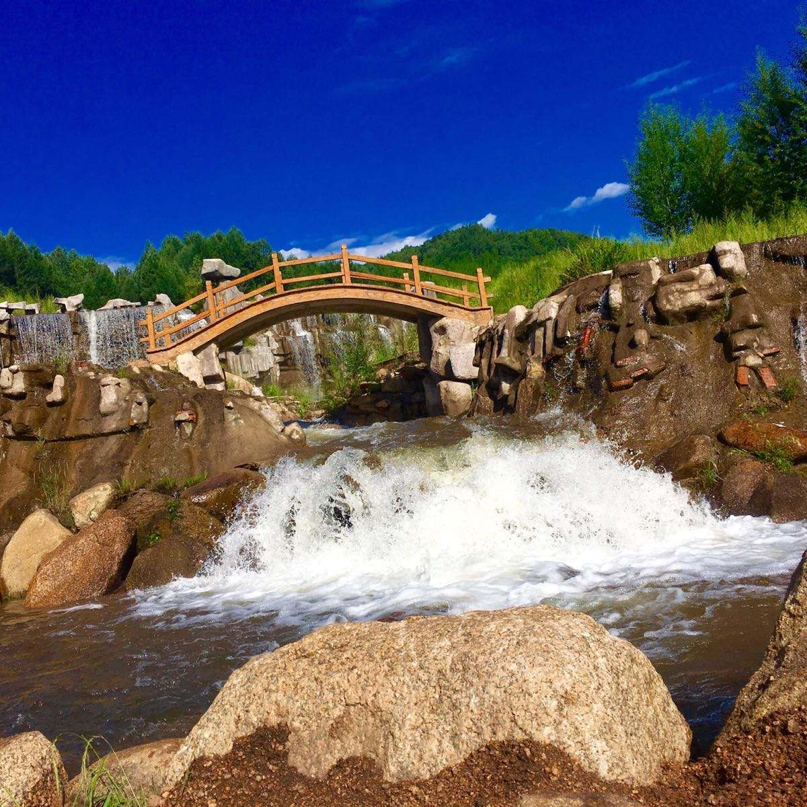
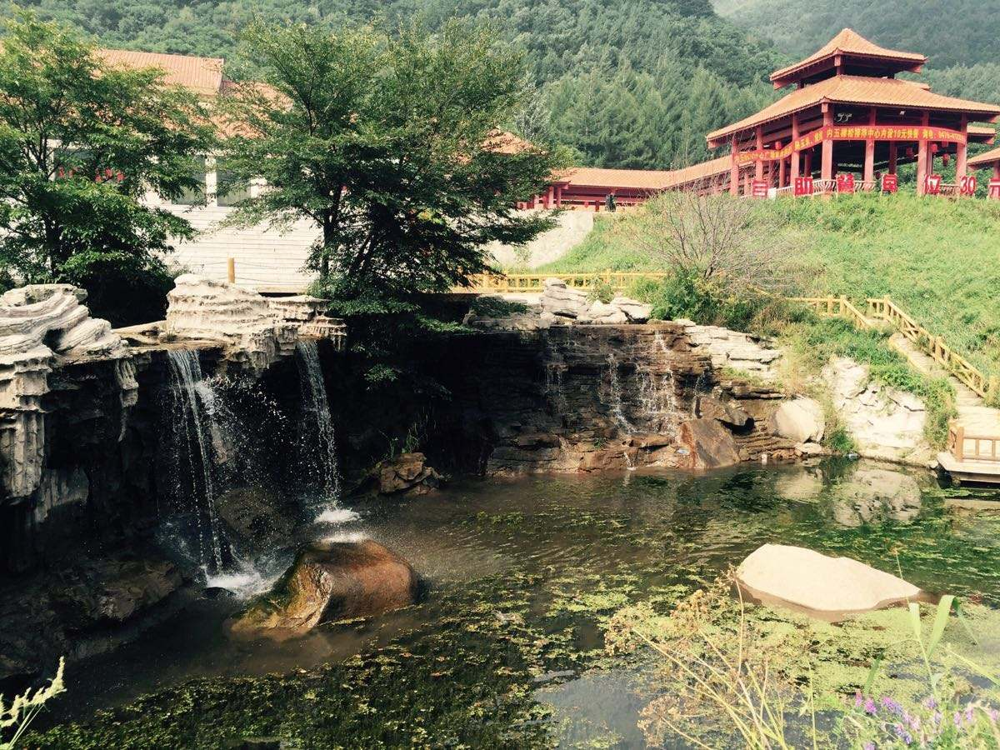

道须沟风景区，位于赤峰市宁城县道须沟村境内，这里素有“塞外版纳”之称。相传，距今二百多年前，乾隆皇帝在木兰围场举行“木兰秋狝”时，偶到此地游玩，被此沟的自然美景所迷，极有兴致地游览了此沟全景。恰遇天降大雨,雨后乾隆面对西南巍巍燕山，心潮澎湃。回头望见山上万条小溪顺山而下，好像万条银蛇在山中飞舞，五彩斑斓的彩虹从天上直插谷底，吟出“水道如须，彩虹落涧”的词句。当地人以乾隆“水道如须”的词句将此沟定名“道须沟”。
景区内有我国面积最大的花岗岩石塘林，游客来到这里，脚下是厚厚的苔藓覆盖的大石块，周边是蔽天遮日的树冠，处处都是山杨树和白桦树，还有各种类型的天然油松林，以及山葡萄、猕猴桃等藤蔓。在风景区穿行，时不时能看到清澈的溪水和飞瀑。 进入景区大门后，首先看到的是一棵棵粗壮的山杨树，树冠像一把巨大的太阳伞，遮天蔽日。那缕缕吹来的山风，使你凉爽惬意。在道须沟内这样的大树随处可见。路西侧长满了叶片肥大，疏密相间的核桃树，将沉甸甸的果实挂满枝头，在微风的吹拂下，摇摇摆摆。 除了郁郁葱葱的丛林、清澈的溪水和瀑布外，景区内还有众多怪石。清澈的溪水从巨石边流过，发出巨大的轰鸣声，或者在石头边留下一片沙滩。来到了道须沟风景区，你仿佛走进了了一个动物的王国，身边经常会有各种蝴蝶翩翩起舞。这里可以听到鸟的啼叫，还有草丛中的蝈蝈，蚂蚱，蟋蟀的鸣声。
